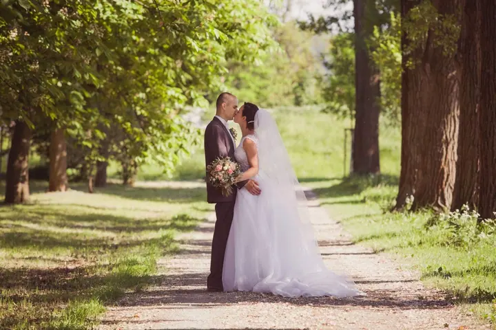

jedna
Svatební focení
Fotím svatební den od přípravy nevěsty přes detaily až po společné portréty novomanželů venku. Výsledkem jsou teplé, barevné fotky.

Svatební a portrétní fotografka · Židlochovice, Rajhradice, okolí Brna

Jmenuji se Monika Čupová a focení se věnuji od dubna 2012. Fotím svatby, portréty a glamour v ateliéru jižně od Brna a ráda vyrážím i ven do okolí.
Více o mně
Co fotím
jedna
Fotím svatební den od přípravy nevěsty přes detaily až po společné portréty novomanželů venku. Výsledkem jsou teplé, barevné fotky.
dvě
Hodina focení v ateliéru nebo venku, se třemi až čtyřmi připravenými outfity a 7 retušovanými fotkami. Nabízím i krátký profesní portrét na web nebo do životopisu.
tři
Svůdné fotky v prádle pro ženy i pro páry. Fotíme hodinu a půl v klidu ateliéru.
Rodinné focení pro 3 až 5 osob v ateliéru nebo v exteriéru. Těhotenské fotky fotím samotné mamince i v páru, klidně i ve spodním prádle.

Váš den, nafocený v klidu a bez spěchu


Za objektivem
Fotím pod značkou Monique Design & Photography a mám ateliér kousek jižně od Brna. Fotoaparát mám v ruce od dubna 2012 a od té doby fotím svatby, páry, rodiny, maminky v očekávání i portréty.
Na svatbě mě baví celý den: ráno při přípravě nevěsty, detaily jako boty, náušnice nebo kytice a potom společné chvíle novomanželů venku, v aleji, v poli nebo u kapličky.
K focení v ateliéru si můžete objednat i vizážistku a úpravu vlasů. Vizážistka vás nalíčí podle typu pleti i podle stylu, který chcete fotit, a během focení mění barvu rtěnky podle oblečení. Fotky z vašeho výběru vždy pečlivě retušuji, neupravené snímky neposkytuji.
Monika
Napíšete mi nebo zavoláte a společně vybereme typ focení, termín a místo, buď ateliér, nebo exteriér v okolí.
Poradím s oblečením a když chcete, objednám vizážistku nebo úpravu vlasů. Na líčení přijďte nenalíčená, s umytými a vysušenými vlasy.
Fotíme v klidu a bez spěchu. Portrét i rodinné focení trvá zhruba hodinu, boudoir hodinu a půl.
Pošlu vám náhledy, ze kterých si sami vyberete fotky. Ty vám retušované dodám do 4 až 6 týdnů od zaslání výběru.
Portfolio
Fotografie jsou ilustrační
Otázky
Ve všech balíčcích pro ateliérová focení je 7 retušovaných fotek v elektronické podobě podle vašeho výběru z náhledů. Každá další fotka stojí 350 Kč.
Běžně 4 až 6 týdnů od chvíle, kdy mi pošlete výběr. Když spěcháte, nabízím expresní úpravu do 4 dnů za příplatek 2 500 Kč.
Ne, neupravené fotky neposkytuji. Ke každé fotce, kterou dostanete, se pečlivě vracím při retuši.
Ano. Vizážistka stojí 1 500 Kč za osobu a příprava trvá zhruba 30 až 40 minut, úprava vlasů 500 Kč. Když má být focení venku a počasí nevyjde, přesuneme se do ateliéru.

Napište pár vět o tom, co si představujete. · +420 724 484 019